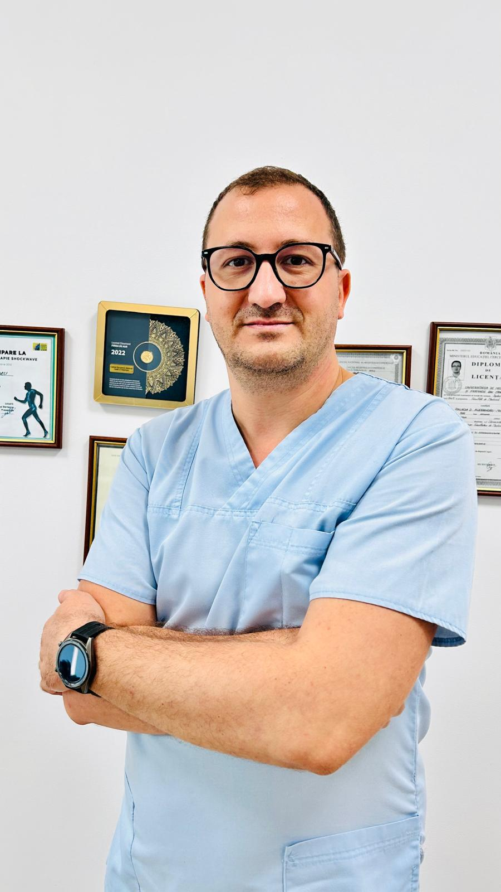

Palada Alexandru Mihail
Specialist Recuperare neuro-motorie, fiziokinetoterapeut și recuperare medicală, universitatea de medicina și farmacie specialist terapia Shockwave
De-a lungul a 15 ani de experiență, am avut privilegiul de a colabora cu diverse categorii de pacienți, de la sportivi de performanță până la persoane cu afecțiuni dintre cele mai grave.
Abordarea mea se bazează pe o evaluare detaliată și pe dezvoltarea unor programe de terapie personalizate, menită să răspundă nevoilor și obiectivelor fiecarui pacient în parte, utilizând tehnici moderne și eficiente pentru a asigura cele mai bune rezultate!
